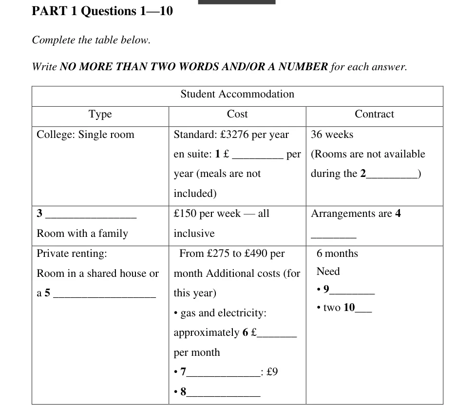
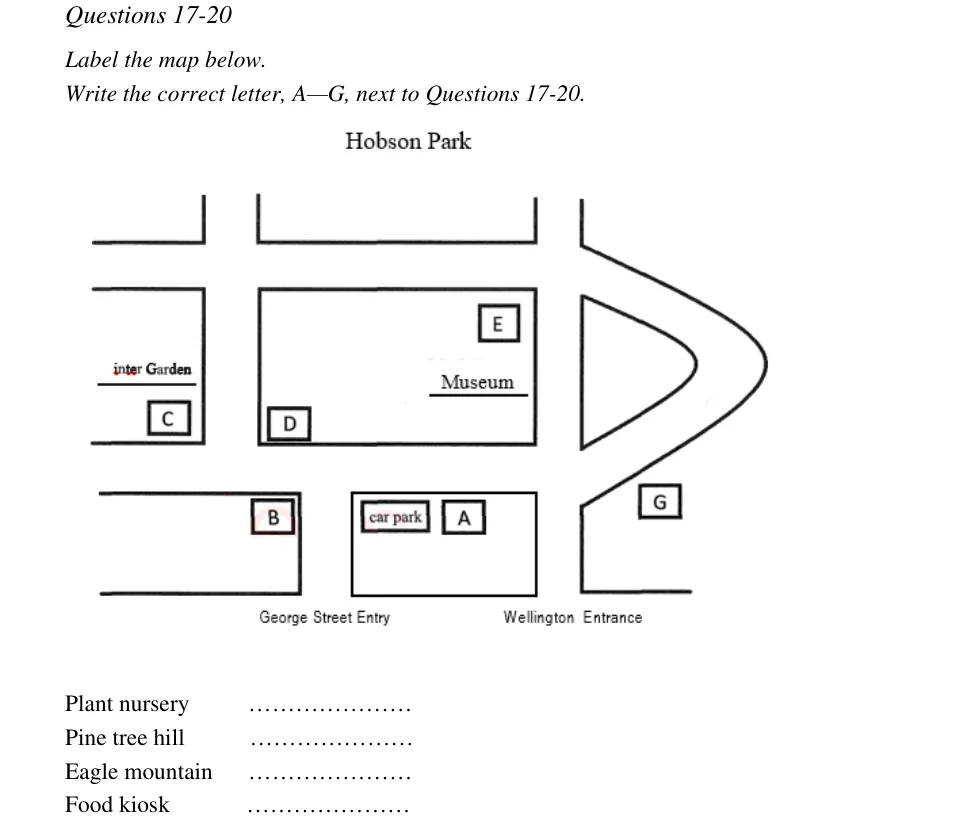
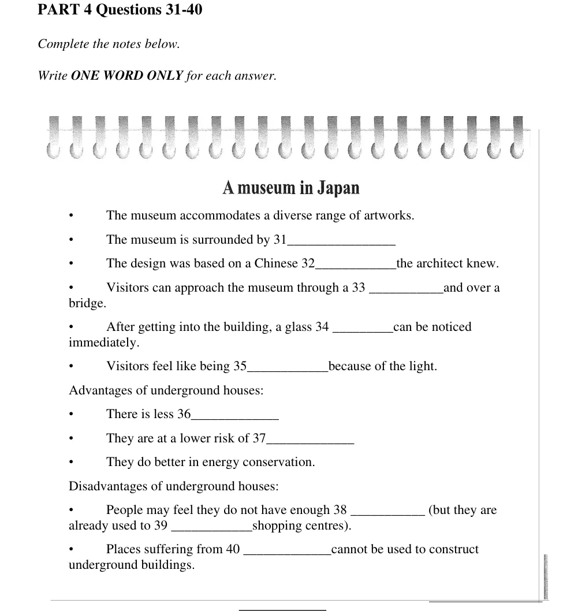

Recent Actual Test 7 · Listening Test 4
Listening and questions
Section 1Questions 1–10

Section 2Questions 11–20
Questions 11–16
Choose the correct letter A, B or C.
11 The park was originally the site of
12 The two chiefs met in the area to
13 The park was founded in
14 The area used for testing is the
15 Who provided the artwork to the village?
16 What is special about the Temperate House?

Section 3Questions 21–30
Questions 21–25
Choose the correct letter A, B or C.
21 What skills does Peter want to learn?
22 What is Peter's main strength?
23 What will the careers officer help Peter with?
24 Why did Peter choose the IT business?
25 What will Peter do for the next term?
Questions 26–30
What job opportunities are the following companies offering?
Choose FIVE answers from the box and write the correct letter, A—G, next to Questions
26— 30.
Job opportunities
- A make business contacts
- B understand customer relations
- C learn time management
- D use a foreign language
- E travel to another country
- F receive financial training
- G learn project management
Companies
26 SAIC ……………………
27 Gemini Technologies ……………………
28 Deloitte ……………………
29 Kearney ……………………
30 Vortex ……………………
Section 4Questions 31–40

Check your answers
Marking ignores capital letters and accepts plurals and the usual alternative answers. If your answer is right but not accepted, press My answer is also right under it.